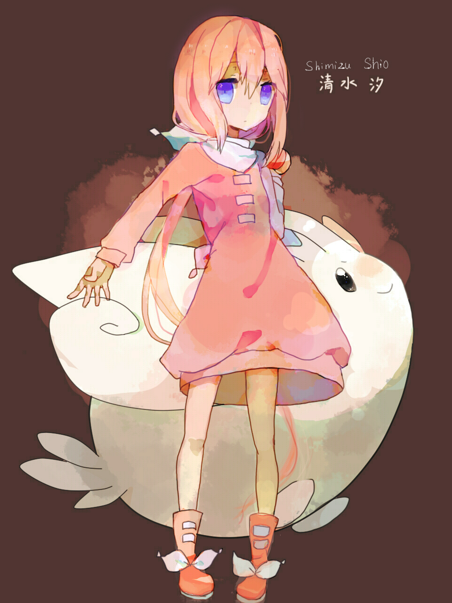

为什么写括号1，那是因为这东西一定会有2345的，这个巨大的坑，一篇绝对讲不完
说到这个大概还要说当初在神奇宝贝吧的相关，不过那个也之后再说吧。
这个坑我印象中是2013年左右开挖的，设定是以精灵宝可梦的第五世代相关作为背景然后原创一个世界观讲我想讲的故事。
——是的现在都第八世代了，GF的故事力和技术力从《精灵宝可梦 黑·白》的巅峰掉到了《精灵宝可梦 剑·盾》的谷底，结果这坑还没动呢。
当然因为这坑大概不会涉及超进化、Z技能等一系列后来新加的设定，继续填的话大概也会沿用第五世代的内容吧。……毕竟后来又出了一堆神兽，我可不想再往这个已经够大的世界观里再加新东西了。
说回正题吧，清水汐就是我在这个世界观设定下的第一个女儿——也是17的女主。

虽然这张立绘已经是2代重制版（？）了…她的设定我一直没有改过，而且也不适合在这里说出来。
只能说，她就是以我眼中的我自己创造的蓝本，如果说一之濑诗音是把扣子眼里的我按照我自己理解的方向修了一下（其实并不是因为除了立绘以外人设其实是我自己写的……），那清水汐除了外貌设定上跟我毫无关系，其余大部分设定都跟我大有关系。
既无力又怕生，那就是我当时眼中的我自己。
要说现在改了吗…好像……也没怎么改。对吧。
其实有一大部分的人设都是从当时的神奇宝贝贴吧发招人贴招来的，现在回想起来只能说是个蠢得不能再蠢的过去。至少先把世界观设定全做好了再招人啊，白白让人期待而又满足不了别人的期待，愚行而已。
当时的吧友大半也都失散，能留下一丝半缕联系的如今也已形同陌路。
那个世界的故事尚未开始，我自己反倒是为自己奏响了可笑的镇魂歌。
我在那个夏季就早该死了，为何如今还苟活于世。